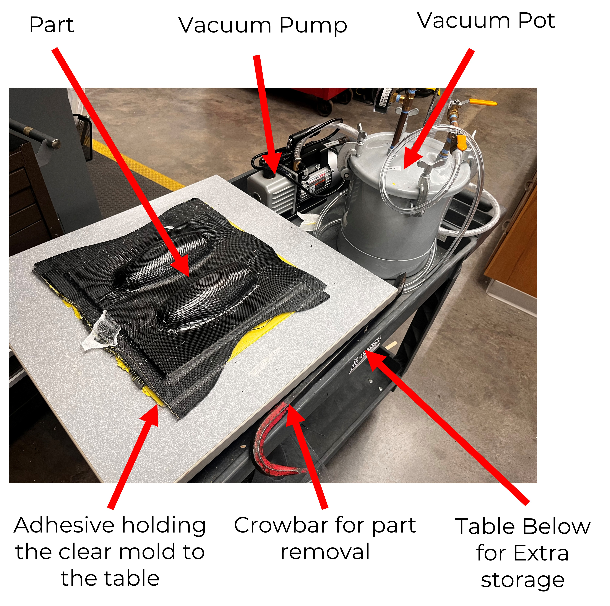
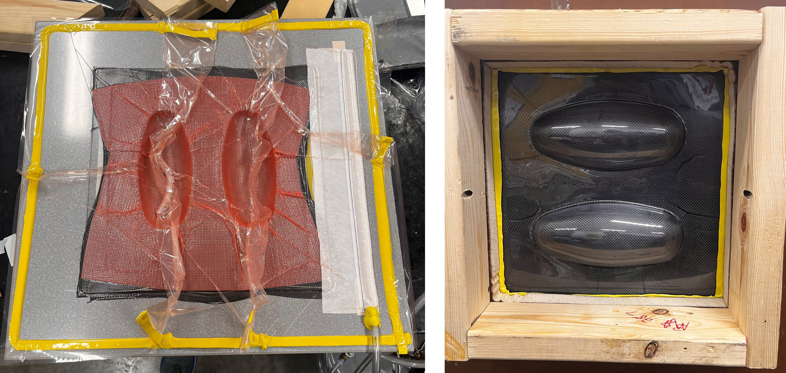
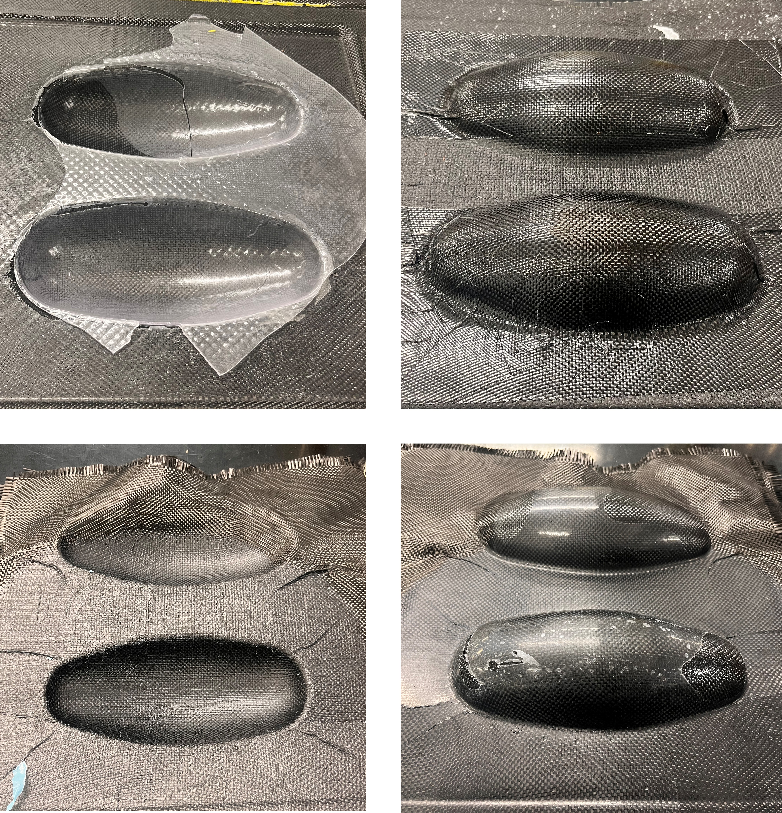

Project Overview
Traditional composite resin-infusion tooling is typically designed around a specific part geometry. This means that new tooling often needs to be manufactured for every new part, requiring additional material, manufacturing time, and workspace.
The goal of this project was to develop a standardized resin-infusion table that separates the reusable vacuum-sealing surface from the part-specific mold. Smaller interchangeable molds can then be installed into the table rather than manufacturing an entirely new infusion tool for every part.
The system was also designed as an educational platform that could be used to demonstrate composite resin-infusion technology to students.

Prototype modular resin infusion table and vacuum system.
My Contributions
This project was completed as part of a five-person engineering team. My individual contributions included:
- Table Design and Fabrication: Constructed the complete infusion table top and helped develop the reusable tooling concept for interchangeable composite molds.
- Vacuum System Setup: Set up the vacuum-bagging system, sealant tape, vacuum lines, and mold sealing surfaces required to maintain vacuum during the infusion process.
- Composite Layup: Prepared and positioned the carbon-fiber reinforcement and supporting infusion materials within the mold prior to vacuum bagging.
- Resin Infusion: Prepared and introduced the epoxy resin into the system and monitored resin flow through the carbon-fiber reinforcement during vacuum infusion.
- Prototype Testing: Assisted with vacuum testing and experimental infusion trials to evaluate whether the interchangeable mold and reusable table could successfully produce composite parts.
- Process Evaluation: Evaluated the finished composite parts for manufacturing defects, including dry spots, air voids, and uneven resin distribution, and identified potential process improvements for future iterations.
Engineering Objectives
Reusable Platform
Create a permanent infusion surface that can be reused instead of manufacturing a completely new tool for every part.
Interchangeable Molds
Allow smaller part-specific molds to be installed and removed from the main infusion table.
Reduce Material
Reduce the amount of tooling material required for new composite part geometries.
Maintain Vacuum
Develop a sealing system capable of maintaining the vacuum required for resin infusion.
Design Concept
The primary design concept was to separate the vacuum-sealing flange from the actual part mold.
Rather than creating a complete infusion tool for every new geometry, the table provides the reusable sealing surface while a smaller thermoformed insert contains the geometry of the part.
A 6-inch flange surrounding the mold cavity provides the required area for the vacuum seal. By integrating this flange into the reusable table, only the smaller mold insert needs to change between parts.
Prototype Development
A physical prototype was constructed to determine whether the interchangeable mold concept could maintain vacuum and successfully perform a composite resin infusion.
Prototype Components
- Reusable infusion table
- Thermoformed PETG mold insert
- Vacuum pump
- Vacuum pot
- Vacuum bag
- Sealant tape
- Resin inlet
- Vacuum line
- Composite reinforcement
Experimental Testing
A resin infusion was conducted using the prototype table and thermoformed mold. Sealant tape was used to secure the vacuum bag and was also tested as a method of attaching the PETG mold to the reusable table.
Resin was introduced near the center of the tool and vacuum pressure drew the resin through the reinforcement toward the vacuum line.

Experimental resin infusion setup showing the front and back of the mold.
Results
The prototype successfully maintained vacuum and demonstrated that composite parts could be infused using interchangeable mold inserts.
Successful Vacuum
The table and mold assembly successfully maintained sufficient vacuum during the infusion process.
Interchangeable Mold Concept
The test demonstrated that smaller part-specific molds could be integrated into the reusable table.
Successful Resin Flow
Vacuum pressure successfully drew resin through the reinforcement and produced composite parts.
Manufactured Parts

Composite parts produced during experimental resin infusion testing.
Engineering Analysis
Although the prototype demonstrated that the overall concept was viable, inspection of the manufactured parts revealed several processing defects.
Dry Spots
Several areas of the laminate appeared lighter and were not completely saturated with resin.
Likely Cause: Uneven resin flow prevented resin from reaching all areas of the reinforcement before curing.
Design Improvement: Modify resin inlet locations, vacuum locations, and flow-media placement to produce more uniform resin distribution.
Air Voids
Visible bubbles were observed in portions of the finished composite laminate.
Likely Cause: Small vacuum leaks or insufficient removal of air before resin entered the laminate.
Design Improvement: Improve vacuum sealing and verify vacuum integrity before beginning the infusion.
Uneven Resin Distribution
Resin did not flow evenly through all regions of the part, contributing to incomplete fiber saturation.
Design Improvement: Redesign the flow path and experiment with alternative resin inlet and vacuum-line configurations.
Mold Design
Mold geometry, material selection, and warping affected both resin flow and the demolding process.
Design Improvement: Investigate alternative thermoformable materials and improved mold-manufacturing methods.
Future Design Improvements
Vacuum Sealing
Test alternative sealants to improve the connection between the removable mold and infusion table.
Mold Material
Identify a thermoformable material that can withstand demolding while releasing more easily from epoxy.
Surface Coating
Investigate longer-lasting surface coatings that improve release performance and table durability.
Mold Accuracy
Improve mold-manufacturing methods to reduce warping during fabrication.
Conclusion
The prototype demonstrated that a reusable resin-infusion table with interchangeable molds is capable of performing composite resin infusion.
The mold system, vacuum setup, and material layout demonstrated the feasibility of the modular tooling concept. Testing also identified several areas for improvement, particularly resin-flow control, vacuum sealing, mold material selection, and demolding.
With additional design iterations, the platform could provide a repeatable system for manufacturing and demonstrating multiple composite part geometries without requiring a completely new infusion tool for each design.